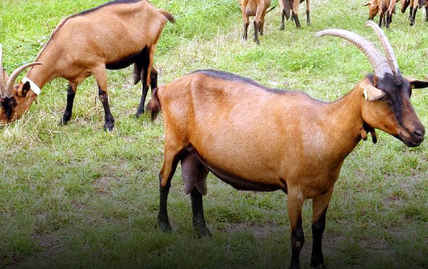

Los mejores productos
bobinos
Somos una finca comprometida con la ganadería regenerativa
Ganado
Wagyu
Es una de las razas bovinas con mayor tradición de Asia
Ganado
Angus
Es una raza de ganado bovino originario de las regiones escocesas de Aberdeeen
Cabras
Boer
Raza caprina originaria de Sudáfrica, ideal para la producción de carne
Cabras
Alpinas

Especializada en la producción láctea y adaptada a la vida en la montaña.